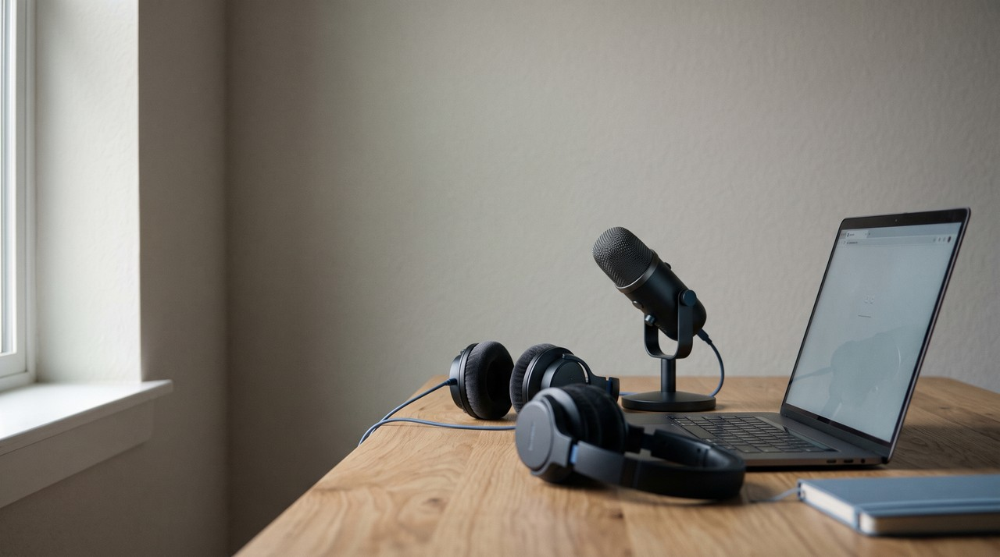
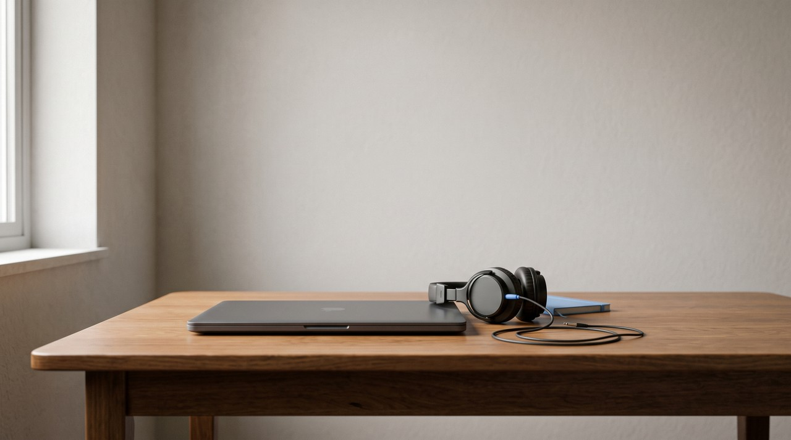

OpenVoice voice cloning: free under MIT, but it copies only the tone of your voice, not your accent

If you need a free voice cloner for commercial work, OpenVoice V2 is a model from MyShell that costs nothing to use. It came out in April 2024 under the MIT licence, which means you can use it in commercial projects without paying anyone. The model speaks English, Spanish, French, Chinese, Japanese and Korean. But its own Q&A page explains that it only copies the tone color of your voice, while your accent and your emotion come from a separate base speaker model instead. Installing it takes real work with Linux and Python, and on Windows you only get an unofficial guide written by users.
| OpenVoice V2, self hosted | VoiceClone | |
|---|---|---|
| Price | Free to download | One voice free, then $49 one time |
| Selling what you make | Allowed, MIT licence | Allowed, with your own voice |
| What it copies from you | Tone color only, not accent or emotion | Your voice, kept with your breaths and your accent |
| Languages | English, Spanish, French, Chinese, Japanese, Korean | English |
| How it learns your voice | Instantly, from one short clip | Trains on 1 to 3 minutes of your speech |
| Official setup | Linux, Python 3.9, conda, for developers | Windows 10 or 11, one START file |
Written by Inam. VoiceClone in the right column is my own app, so I have a side in this table, and you should weigh it that way. The rest of my engineering work lives on designesh.com. Last updated 20 October 2026.
When you start searching for a free voice cloner for paid work, OpenVoice looks like the right choice on paper. It comes from MyShell, with the code and the model hosted on GitHub. Both versions have been under the MIT licence since April 2024, which is about as open as software gets. Most free voice tools I have written about here have commercial limits in their terms, but OpenVoice does not.
The catch sits in how the audio is built. OpenVoice copies the tone of your voice, but not your accent or your emotion. The developers say this directly on their Q&A page, and it completely changes how the clone sounds when you listen back to it. It saves you an evening of setup if you understand what tone color means before you begin.
What is OpenVoice, and who makes it?
OpenVoice is what researchers call an instant voice cloning model. Instant means the software never trains on your audio files. You just hand it one short sample, the system measures your vocal tone, and it applies that sound to new sentences right away. On the OpenVoice repository on GitHub, the notes confirm that V1 and V2 are both MIT licensed and free for commercial and research use.
The technical foundation comes from a research paper called OpenVoice: Versatile Instant Voice Cloning, which was posted on 3 December 2023. The paper notes that over 2 million people used the model as the voice engine inside MyShell.ai. MyShell then released V2 in April 2024, adding cleaner sound and built in support for English, Spanish, French, Chinese, Japanese and Korean.
What does "clones only the tone color" actually mean?
Tone color simply describes the texture of your physical voice. It is how warm or sharp you sound, whether your voice is deep or breathy, and it is how a friend knows it is you on the phone before you say who is calling. Accent is a separate thing, because accent is the way you pronounce words, where you place stress, and the rhythm of your speech. Emotion is how that pitch and rhythm rise and fall when you feel calm, excited or tired.
The OpenVoice Q&A explains clearly that the tool only copies the tone color of your reference recording. The accent and the emotion come entirely from the base speaker model. That base speaker is just a standard text to speech voice that reads your text out loud first. After that, OpenVoice overlays your tone color on top of that recording, like painting your vocal texture over someone else's speaking style.

To see how this works in practice, imagine you speak English with a Pakistani accent like I do. In V2, the base speaker comes from MeloTTS, and the MeloTTS page shows English options for American, British, Indian, Australian and a default voice. The clone will carry the resonance of your throat and chest, but it will pronounce words using one of those five voices. People who know you will hear your sound, but they will also notice that the voice does not talk the way you talk.
If your accent is part of how people know your voice, OpenVoice will not keep it. If you are a narrator who already speaks with a neutral American or British accent, the difference is much smaller.
Is OpenVoice really free for commercial use?
Yes, you can use it for business. The code uses the MIT licence, and the README file states that both versions are free for commercial work from April 2024 onward. There are no revenue limits, no non commercial tick boxes when you download it, and no paid plan waiting later. MeloTTS, which V2 relies on for the base speech, uses the MIT licence as well.
That licence sets it apart from the other free models. For example, the weights for F5-TTS cannot be used commercially, which I wrote about in F5-TTS voice cloning, and Fish Speech sets annual revenue caps on commercial use. Looking strictly at the licence terms, OpenVoice is the cleanest of the free cloners I have covered.
How hard is it to install OpenVoice on Windows?
The official setup is designed purely for Linux. The usage guide states that the installation steps are meant only for developers and researchers who are used to working with Linux, Python and PyTorch. You have to configure a conda environment locked to Python 3.9, install packages using pip, and extract a checkpoint zip file into a folder. Then you pull MeloTTS from GitHub and run another terminal command just to fetch its pronunciation dictionary.
If you use Windows, the repository points you to an unofficial setup guide written by community members rather than MyShell. Once you finish installing, the provided examples are Jupyter notebooks, which are files of Python code you must execute cell by cell instead of an app with standard buttons. A programmer who works in Python every day will manage it fine, but for most people it means an evening spent chasing errors in the terminal.
The real strength here is generation speed. MeloTTS is designed to read text fast enough for real time output on a standard computer processor. Because OpenVoice never needs to train on your voice files, you get your first audio clip as soon as the installation runs properly.
Where is OpenVoice better than VoiceClone?
There are areas where OpenVoice does better than what I build, and I want to state them honestly. It handles 6 languages while my tool handles one, and it can make your voice speak a language you never recorded in, which the authors call cross lingual cloning. You can also adjust elements like emotion, pacing and pauses through the base speaker. It generates speech instantly without training, and the MIT licence allows you to build it into software of your own.
If you need many languages, or you want to build a product of your own on top of a free model, OpenVoice is the better pick.
How does VoiceClone do it differently?
I built VoiceClone as a standalone desktop application for Windows 10 and 11 using the open source GPT-SoVITS model. You start it simply by double clicking START VoiceClone.bat, and everything runs offline so your voice files stay on your machine. You record between 1 and 3 minutes of your normal speaking voice, and the Make it perfect button trains a dedicated model of your voice locally. An NVIDIA graphics card completes the training faster, but a regular processor can still finish the job.
Because the tool actually trains on your speech, it keeps your breathing and your accent, which is what OpenVoice leaves out. Its boundaries are clear as well: it only handles English, it cannot produce singing, and the free download lets you train one voice completely and generate 3 test samples. The $49 one time license gives you unlimited generation length, full word editing, retraining and audio exports without a monthly fee. You can find it on the download page. Please clone only your own voice, or a voice where you have explicit permission from the speaker.
FAQ
Is OpenVoice free for commercial use?
Yes, it is free. Both OpenVoice V1 and V2 have used the MIT licence since April 2024, and the repository README notes that both research and commercial use are permitted. MeloTTS, which acts as the base speaker for V2, is published under the MIT licence too.
Does OpenVoice clone my accent?
No, it does not. The OpenVoice documentation explains that the system only extracts the tone color from your audio, not your accent or your emotion. Those elements are provided by the base speaker model, and the English voices in MeloTTS are limited to American, British, Indian, Australian and a default voice.
Can I run OpenVoice on Windows?
The project only provides official instructions for Linux users who understand Python and PyTorch. If you run Windows, you have to follow an unofficial guide created by community members, and the sample files run inside Jupyter notebooks rather than a standard desktop interface.
How much audio does OpenVoice need?
The research paper mentions that a short reference clip is enough, though the documentation does not name an exact number of seconds. The Q&A page warns that files that are very short, full of background noise, containing multiple speakers, or filled with silence will produce poor audio.
Sources: the myshell-ai OpenVoice README, USAGE and QA pages on GitHub, the OpenVoice V2 model page on Hugging Face, the OpenVoice paper on arXiv (2312.01479, version 6), and the MeloTTS README on GitHub, all read on 20 October 2026, plus the VoiceClone product page on myvoiceclones.com.
Hear your own voice come back.
The free Windows app clones and fully trains one voice, yours, on your own PC. No account, no upload, and the download starts right away.